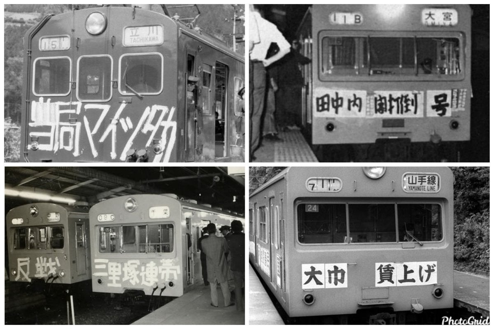

@Cya_Ninnensuki @lnyn267348 那你说的这个就没有影响百万人？自相矛盾呢


@bghtnya @lnyn267348 就和1970年代日本国铁工人争取罢工权一样在列车上刷字贴纸片啊，战后重组的国铁，工人很多权利受到限制，尤其是按规章运转导致很多列车不能准时，乘客都暴动了，工人就应该反抗啊，同年代南京工人学生反对四人帮也是在列车上刷字让半个国家的人看到 https://t.co/JoLPqsBZ1m
@bghtnya @lnyn267348 当然发生1985年11月29日和1986年9月24日那种影响百万人的铁道设施破坏事件，我就要反对他们错误的抗议方式了，2022年11月底，深圳正是发生了地铁站附近的抗议，导致连续数天多个地铁站暂时关闭，SNS上很多人都表达不满